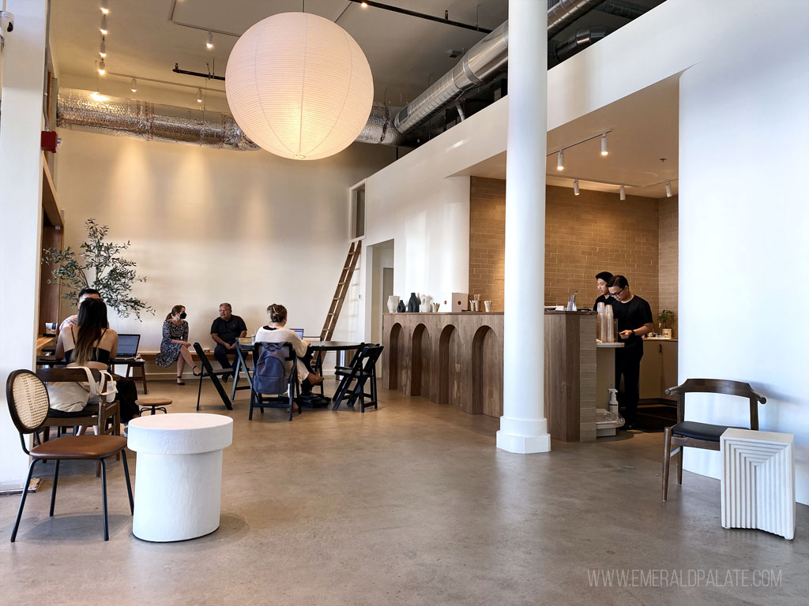

Ryan's Caffe secara resmi membuka 5 cabang baru di wilayah Jabodetabek untuk memenuhi permintaan pelanggan yang terus meningkat. Cabang baru ini dilengkapi fasilitas premium termasuk drive-thru dan co-working space.
Cabang-cabang baru ini berlokasi strategis di Jakarta Selatan, Bekasi, Tangerang, Depok, dan Bogor. Setiap cabang memiliki desain interior unik yang menggabungkan elemen tradisional Indonesia dengan sentuhan modern.
Grand opening dihadiri oleh influencer lokal dan menawarkan promo buy 1 get 1 untuk menu signature selama seminggu pertama.
Kembali ke Beranda